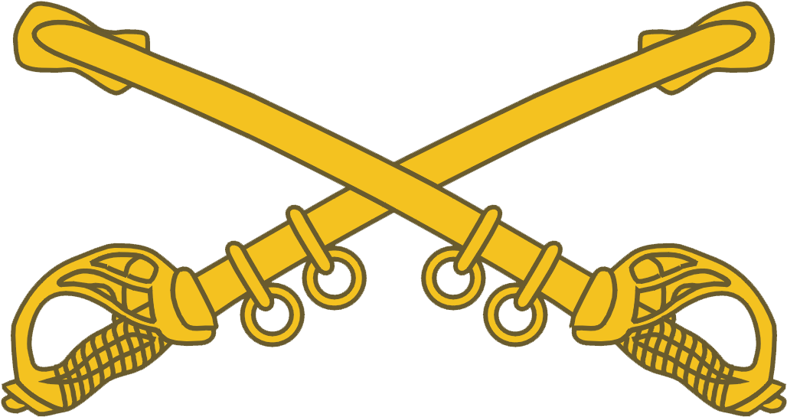

A Little Bit About Me
I started building and repairing computers for my family around the age of 12. I quickly
learned that computers were something of a specialty for me.
As I progressed through school, I became more and more fascinated with technology. While in high school, I
joined the Army National Guard, as a 19D Cavalry Scout
, HOOAH!
As a Scout, I was responsible for maintaining my team's radios, sat phones, laptops, and tons of other tech.
Shortly, after graduating, I found myself working
for Animal Control. This reinforced my passion for animals. While working with Animal Control, I continued
to repair computers on the side, and started to dabble in
programming and web development. Soon, friends and clients started to push me to get a degree in a Tech
Field. After much encouragment, I decided to go and I obtained my
Bachelor's Degree in Computer Information Systems. Now I work as a freelance developer. I have listed a few
projects below and the link to the git repo.